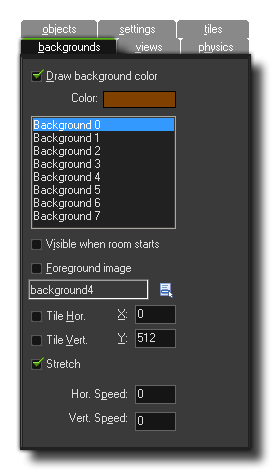

This tab is where you can define the backgrounds of your room. A
background can be made up of a single colour, an image, or a
combination of colour and transparent images. The following options
are available:
When you tick this option, you are telling GameMaker:
Studio to draw a background colour below everything else in
your room. This colour can be selected by clicking on the colour
box which will open the following standard colour picker:
The
background colour is only useful if you don't use a background
image that covers the whole room, or if that image is partially
transparent, otherwise it is best to un-check the box labeled
Draw background colour as this will save some processing
time.
It is worth mentioning that for the HTML5 module, switching this
option off and unticking "Clear Background with Window colour" in
the Views
Tab permits you to use the special function
draw_clear_alpha to clear the canvas alpha, making
your game "transparent" and so showing any background images that
you may have on the host web-page HTML.
Warning! Having a room with no background colour and no
background image will result in "artifacts" being left behind by
all moving instances within the room on most of the target
platforms (which can give some interesting results!)
Underneath the colour picker, you can see a list of eight
backgrounds numbered from 0 to 7. These can all be defined for one
room, and you can have all eight active at any one time if you
wish. When you select one, all the options beneath will then refer
to that background only, and in this way you can define the
properties for all eight independently. The rest of the options on
this page are applied to each individual background that you
select.
This toggles the background when the room starts between being
visible or not. You may have a game where only one of the
backgrounds is visible at the start of the game, but later you wish
to set another up as visible. So, you set up the two backgrounds in
the room editor and then in a later event within an instance, you
can toggle between them. Another thing you may want is several
backgrounds visible at the same time, especially if you wish to
have semi transparent parts, different sizes or even parallax
scrolling, so you can toggle this to have various visible at
once.
Toggling this converts the background into a foreground, which
basically means that instead of being drawn below everything it is
drawn on top of everything.
If you click on this box, you will be presented with a list of
all the background resources available and you may select one of
them to be used as the background image for the currently selected
background.
By checking these options you are telling GameMaker:
Studio to tile the background in the chosen direction
infinitely. You can choose the position within the room for the
coordinates of the top left hand corner of the background and the
room will be tiled from this point, or, if tiling is not activated,
the background will be drawn at that point.
This option will stretch the background to cover the whole room.
Bear in mind that this option will make backgrounds that are
smaller than the room larger to fit and make backgrounds
that are larger than the room smaller to fit too. Note that the
ratio of the image will not be maintained, so some
distortion may occur when using this option.
These options allow you to set the background image to scroll through the room at a given speed. You can have positive or negative values, where a positive value for the horizontal scroll would be to the right (negative to the left) and a positive value for the vertical scroll would be to the bottom (negative to the top). The speed is calculated in pixels per step, so a horizontal speed of 5 will move the selected background through the room 5 pixels to the right every step. This can be particularly useful for top down shooter games, where you can have a scrolling tiled background to give the illusion of movement and make the room seem infinite even when it is really small. Be careful using these options with stretched backgrounds as the result can sometimes be rather ugly.